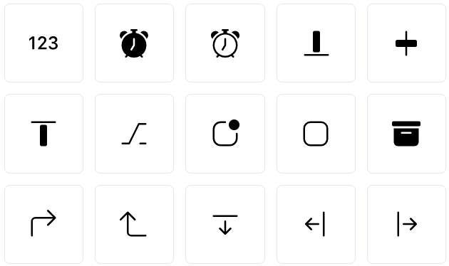
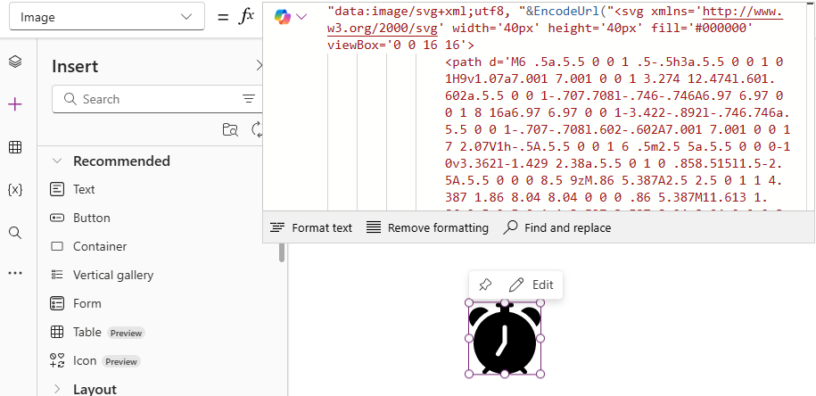

A Simple Guide to Adding Custom Icons in Your PowerApp
Published on September 1, 2025 by STAFFAPPS Australia
One of the easiest ways to make your PowerApp look professional and user-friendly is to move beyond the standard icons. Using custom Scalable Vector Graphics (SVGs) allows for crisp, modern icons that can be dynamically coloured. Here’s how to do it using the fantastic free resource, PowerIcons.
Step 1: Find and Customise Your Icon
Navigate to powericons.dev. This site is built specifically for PowerApps developers and has a great library of icons. Browse or search for an icon that fits your needs. You can customise the stroke width and other properties before you copy the code.
Step 2: Copy the SVG Code
Once you've selected your icon, simply click the "Copy SVG" button. This copies the icon's code to your clipboard. It's a block of text that describes the icon's shape and properties.
Step 3: Add an Image Control in PowerApps
In your PowerApp, insert a new Image control from the "Media" dropdown. Don't worry that it's an image control; PowerApps can render SVG code as an image. Resize it to your desired icon size.
Step 4: Paste the SVG Code
Select the new Image control. In the properties panel, select the Image property from the dropdown. In the formula bar, you need to format the SVG code as a text string that PowerApps can understand. It needs to look like this:
"data:image/svg+xml;utf8, " & EncodeUrl("[PASTE YOUR SVG CODE HERE]")
Replace `[PASTE YOUR SVG CODE HERE]` with the code you copied from PowerIcons. The `EncodeUrl` function ensures that all the special characters in the code are correctly interpreted.
That's it! You should now see your crisp, custom icon in your app. Because it's an SVG, you can even change its colour dynamically by replacing the `stroke` or `fill` values within the code using Power Fx formulas, making your app's UI even more responsive and intuitive.